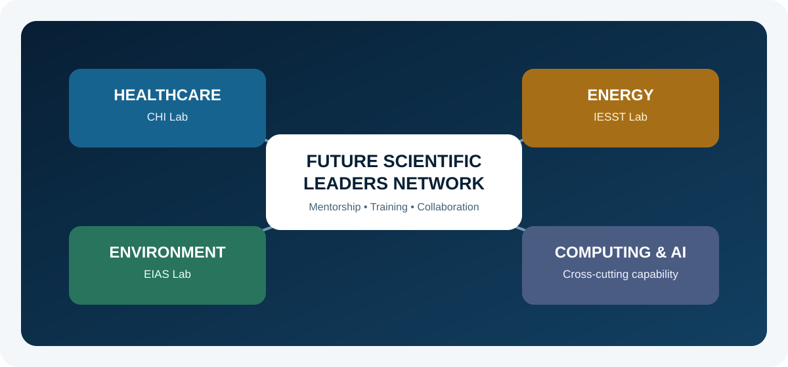
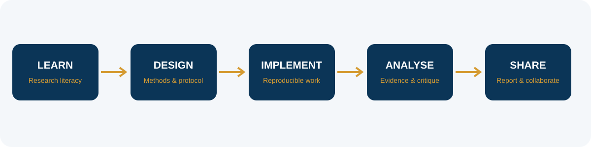
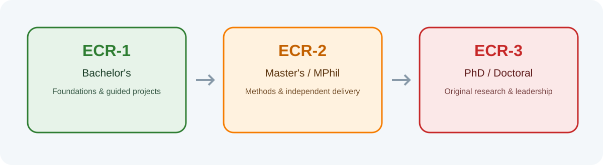

Future Scientific Leaders
Connecting emerging scientists with research mentorship, interdisciplinary projects, scientific training and international collaboration across healthcare, energy and the environment.
Explore membership Discover research domains →
Build research capability. Connect disciplines. Enable impact.
Future Scientific Leaders is designed to help students and early-career researchers move from foundational research skills to increasingly independent, reproducible and collaborative scientific contributions.
From learning to scientific contribution
The network provides a structured environment for scientific reading, research-methods training, computational implementation, critical analysis, documentation and research communication. Participants engage with mentors and research teams through defined projects and development activities.
Healthcare, energy and environment form the three principal application pillars. Computing, data science and artificial intelligence provide enabling methods across all pillars.
Learn about the network →
Three laboratories. Shared scientific capability.
The network connects early-career researchers with domain-focused laboratories and cross-disciplinary research opportunities.
Loading laboratory directory…
A progressive ECR pathway
Development is aligned to research experience and academic stage, while recognising that individual progress depends on demonstrated skills and project responsibilities.

Contribute to a research community
Explore the pathways, identify a research area and prepare an expression of interest.